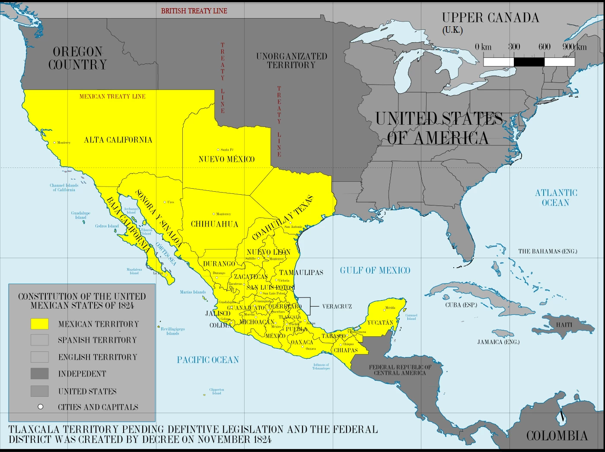
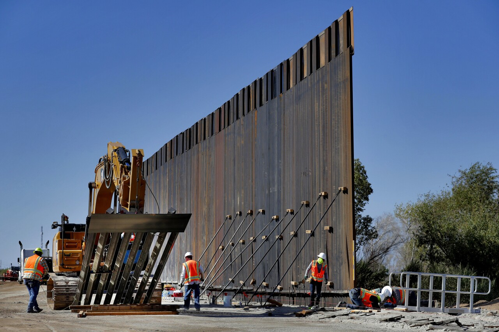
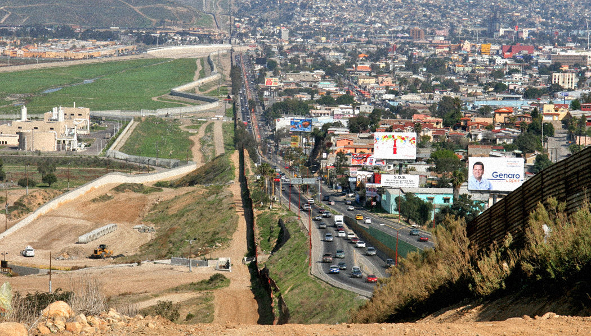

Fronteira EUA x México
Histórico e Guerra Mexicano-Americana
México e os Estados Unidos, ambos países norte-americanos, tiveram sua história marcada por intensos conflitos territoriais. No início do século XIX, colonos estadunidenses chegaram ao território do Texas — onde haviam descoberto a presença de minas de prata —, que, na época, fazia parte do México, o qual tinha se tornado independente da Espanha, em 1821. Após divergências entre os colonos e os mexicanos, um conflito foi travado, com grupos estadunidenses lutando pela independência do Texas.
Em 1936, o estado foi separado do território mexicano, tornando-se uma república independente. A partir de 1845, com o Destino Manifesto[ag], os Estados Unidos desejavam expandir seu território. Além de buscar anexar o Texas, o governo também tinha interesse na Califórnia e demais áreas do norte do México, pouco povoado, entrando em conflito com o país vizinho, o que resultou em uma nova guerra e na consequente tomada da Cidade do México, então capital mexicana. é por conta disso que diversas cidades e regiões atuais dos Estados Unidos contam com muitas famílias de origem mexicana, pois essas pessoas ocupavam a área original, até a tomada do território.

Com a conquista da capital após 2 anos de batalhas, o México assinou o Tratado Guadalupe-Hidalgo, em 1848, cedendo o Texas, Califórnia, Novo México, Arizona e outras regiões, totalizando a perda de mais da metade do seu território original. Da mesma forma, a fronteira entre os países foi ampliada, trazendo maiores prejuízos aos mexicanos e beneficiando os grandes latifundiários estadunidenses.
Após esses conflitos, o México perdeu grande parte de seu território — que totalizava mais de 5 milhões de quilômetros quadrados, ou seja, foi privado de grandes áreas para plantio e criação de animais, onde havia também uma abundância em ouro. Por esses motivos, no século XIX, o México era um país pobre, atrasado e com enormes conflitos políticos, enquanto os Estados Unidos prosperavam, intensificando sua industrialização e se tornando uma das grandes potências do período.
Dias Atuais
A fronteira entre o México e os Estados Unidos possui uma extensão territorial de mais de 3 mil quilômetros, estendendo-se do Oceano Pacífico até o Golfo do México. é atualmente conhecida pelos intensos grupos de imigração, que saem de seu país natal em direção ao país estadunidense, buscando melhores condições de vida. Estima-se que cerca de 350 milhões de pessoas atravessam a fronteira todos os anos, originárias de vários países latino-americanos, além dos mexicanos. A travessia ilegal causa problemas ao governo dos EUA, que investiu na construção de um muro que separasse completamente os dois países, estabelecendo uma barreira de segurança que contivesse os movimentos ilegais para dentro de seu país.
Início e Construção do Muro

Trabalhadores erguendo uma parte do muro em Yuma, no Arizona.
A construção da barreira se iniciou em 1991, como o governo de George Bush, tendo sido intensificado a partir de 1994, com a Operação Guardião[ah], do presidente Bill Clinton. O projeto foi responsável por construir mais de 22 km entre San Diego e Tijuana. Isso ocorreu em decorrência dos excessivos fluxos migratórios para dentro dos EUA, uma vez que a fronteira mexicana era uma porta de entrada para aqueles que deixavam seu país. As principais cidades onde os muros são localizados são San Diego e El Paso.
A construção do muro representou uma posição contraditória do país estadunidense, já que, na mesma época, 1993, houve a consolidação do Acordo de Livre Comércio da América do Norte (NAFTA), que dava maior integração entre os Estados Unidos e o México. Entretanto, sendo um acordo com viés econômico e comercial, o que houve na prática foi um aumento do número de trocas de mercadorias entre os países e o estabelecimento de indústrias montadoras no território mexicano. Assim, mesmo criando espaço para um relacionamento de boa-vizinhança, o governo dos EUA continuou a construção da barreira, resultando em críticas a respeito de seu posicionamento.
Estado Atual do Muro
Atualmente, o muro conta com mais de 1100 km de extensão, cobrindo cerca de um terço da fronteira entre os países. Estima-se que, até hoje, foram gastos mais de US$ 7 bilhões, e, para cobrir toda a fronteira, seria necessário cerca de 25 bilhões de dólares. Em alguns pontos, o muro é somente um agrupamento de simples paredes, com baixa elevação e pouca proteção. Assim, a fiscalização é pouco eficiente, quando existente, fazendo com que imigrantes pulem o muro para dentro dos EUA. Em outros locais, a barreira possui mais de dois muros de proteção, com alta tecnologia, torres de vigilância, câmeras, detectores de movimento, etc. O governo norte-americano investe bastante em unidades para vigilância e fiscalização do local, enviando muitos agentes para patrulhar alguns pontos da fronteira. Além disso, em alguns locais, o muro se estende até o mar, atingindo até 100 m de distância da costa, para evitar que imigrantes atravessem em períodos de maré baixa.

Vista aérea da divisa do México e Estados Unidos na Playas de Tijuana, Califórnia.
Política Norte-americana
O governo dos Estados Unidos, desde o mandato de George Bush, esteve empenhado em concluir o projeto da construção do muro.
Em 2001, depois do atentado de 11 de setembro, a fiscalização e a construção da barreira se intensificou, fato que continuou no governo de Barack Obama, o qual aumentou a vigilância. Em 2008, o Departamento de Segurança Interna dos Estados Unidos[ai] investiu na construção de mais de 550 km da barreira, focada para os estados do Arizona, Novo México, Califórnia e Texas. No governo de Donald Trump, foi prometido que o projeto seria completo, com o muro cobrindo toda a fronteira, além de ter sido, supostamente, financiado pelo próprio governo mexicano. Entretanto, ao fim do mandato, somente 500 km haviam sido construídos, sendo a maioria dessas reformas. Além disso, o orçamento utilizado para a barreira provém do Departamento de Segurança Nacional, Departamento de Defesa e Departamento de Tesouro dos Estados Unidos[aj].
Em fevereiro de 2019, após declara estado de emergência nacional na fronteira, Trump enviou mais de US$ 1,7 bilhão para a construção do muro, contrapondo ao que dissera sobre o muro ser financiado pelo governo mexicano. Após a eleição de Joe Biden como presidente estadunidense, em 2020, a construção do muro foi impedida, sob a afirmação de que seria somente “um gasto desnecessário”.
Críticas

Divisa entre a cidade mexicana de Tijuana e a estadunidense San Diego.
A construção do muro na fronteira entre os países é alvo de inúmeras críticas de políticos e grupos ativistas. A repreensão baseia-se no argumento de que, ao enviar indústrias e fábricas ao México, dando empregos à população com salários baixos e com pouco custo, levando a maioria do lucro de volta ao seu país, os Estados Unidos estariam diminuindo a qualidade de vida dos mexicanos. Com essa dinâmica, cidades seriam formadas próximas à fronteira, que, a partir das condições precárias, estariam sujeitas à marginalização, tráfico de drogas, e as consequências da concentração de renda. Com isso, o próprio governo norte-americano estaria incentivando, indiretamente, a travessia ilegal dos mexicanos, que não possuem condições para migrar ao país de forma legítima
Além disso, há críticas sobre a ineficiência da fiscalização do muro, não conseguindo conter o narcotráfico, que empobrece ainda mais o povo mexicano fronteiriço. O número de pessoas que tentam atravessar a fronteira diminui a cada ano, entretanto, desde o governo de Donald Trump, que mantinha uma política firme contra os imigrantes ilegais, o número de acidentes e mortes aumentou. Com isso, as condições às quais os migrantes são expostos nos centros de detenção são alvos de críticas, resultando em polêmicas no contexto internacional.
Outro ponto importante são os impactos ambientais decorrentes do muro, que representa um desafio à fauna, relevo e vegetação. Estima-se que mais de 100 espécies animais, com a barreira artificial, perderam cerca de 50% de seu habitat, afetando seu nicho ecológico e sua espécie. Com a ocorrência de enchentes e queimadas, por exemplo, a movimentação dos animais é dificultada, além de causar a fragmentação de espécies, ameaçando sua população.
Um ponto de extrema importância a essa questão é o viés ideológico que o muro representa. Muitos consideram que, diferentemente do Muro de Berlim que dividia a Alemanha entre socialismo e capitalismo, o muro do México e os Estados Unidos, representa a separação entre o mundo desenvolvido e o mundo subdesenvolvido. Da mesma forma, o muro é visto como um símbolo da xenofobia, que segrega a população não somente mexicana, mas latina, da população estadunidense.
Referências
Fronteira Estados Unidos-México